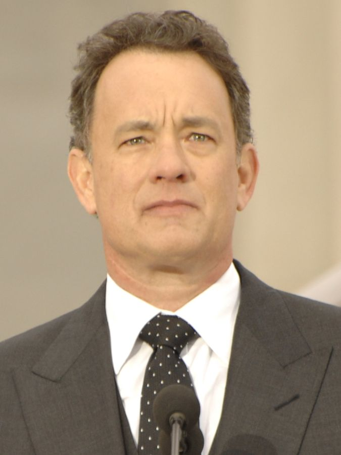
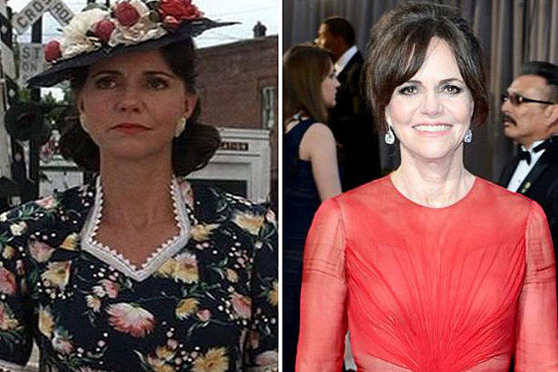
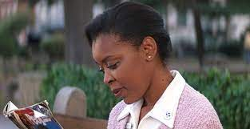
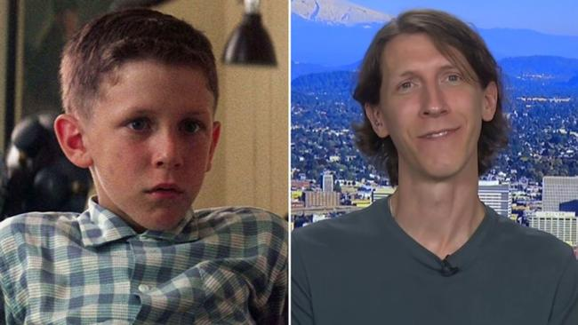
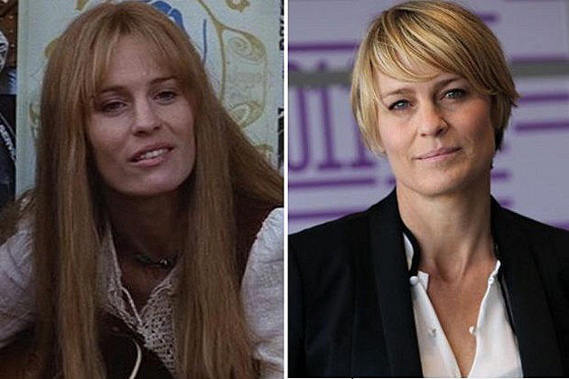

Tom Hanks playes Forest Gump, the main character in this movie. He has starred in many other fils since this 1994 classic.

Tom Hanks

Sally Field
Playing forest's mom in the film, Sally has played many other roles and has most recently played "aunt May" in "The Amazing Spider-Man".

Rebecca Williams
As the Nurse on the bench who Forest was telling his life story too. Sally has also continued her acting carrer in "The Sisterhood Of The Travelling Pants."

Michael Connor Humphreys
As youn Forest in the movie, Michael did not persue an acting career right away and enlisted in the US military from 2005-2010. After that he returned to the big screen in "Pathfinders: In the Company of Strangers."

Robin Wright
Robin Wright, aka Jenny, was forest's childhood love. She is now also known for her role in House of Cards on netflix and her lead in "The Proincess Bride".

Lieutenant Dan was one of forest's friends who lost his legs in the war. He is now playing a character in CSI: New York and advocates for disabled veterans.

Playing Bubba Blue in the film, as one of Forest's friends from the war and business partner in Bubba-Gump Shrimp. Mykelti has since known for his role in "Justified".